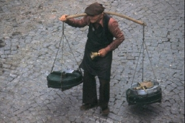
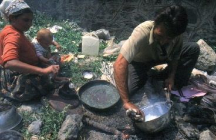

Sabahları simitçinin sesiyle uyanırdık çoğu zaman. Taze, gevrek simitleri vardı. Beyaz peynir ve zeytin ikilisinin baş tacı olduğu masalar bazen yerini simit-çay ikilisine bırakırdı.
Ellerinde çıngıraklar, Adile Naşit’in Hababam Sınıfı’nda çaldığı zilin sesine benzerdi çıkardıkları sesler. Hem o zil sesi hem de kendi sloganlarıyla yoğurt ve süt satan ağabeylerimiz, amcalarımız vardı.
O yoğurtların nerede nasıl yapıldığını bilemedik ama her zaman afiyetle yedik. Garip tartıları, omuzlarından geçirdikleri bir sopa ile taşıdıkları kapları vardı. Biraz daha profesyonel olanlar at arabaları ile taşırlardı ürünlerini. Litrelerine göre hazırlanan demir kaplarda ölçerek satarlardı sütlerini. Bir kaba ya da tencereye konan o yoğurtların tadına doyulmazdı. Aynı zamanda açık diye tabir edilen ve bakkallarda satılan bir yoğurt da vardı. Güvenirdik onlara, zaten komşularımızdı bu işi yapanlar.
Sokaklarımızda daha önce de söylediğim gibi kümes hayvanlarıyla uğraşan insanlar vardı. Koyun, kuzu hatta büyükbaş hayvanlar bile gezerdi caddelerde. Yük hayvanları olarak adlandırılan at, eşek, katırları da görmek sıradan şeylerden sayılırdı.
Bazen bir koyun sürüsü yol alırken sokaklarda, içlerinden bazıları salardı. Bazen de yükü ağır gelen hayvanlar bırakırdı dışkılarını yollara. Biz de dalıp basar ya da top değince üstlerine, hemen su bulup temizlemeye çalışırdık. Su bulamazsak bir gazete parçasıyla silerdik. Yine de kokuları sinerdi üstümüze.
Kurban Bayramları’nda koçlar, koyunlar, Yılbaşı yaklaştığında hindiler, başlarında bir adam eşliğinde yürüyüş yaparlardı sokaklarımızda. Hindiler sürü halinde gezerlerken normal hallerinden daha tuhaf olurlar. Bir yüksek ses duyduklarında hep beraber öyle tepki verirlerdi ki, değmeyin keyfimize. Satıcıları, sıkılırdı çocukların bu tür davranışlarından. Bazen bir sürü birkaç sokak boyunca takip edilirdi hindileri kızdırıp eğlenmek adına.

Sütçülere dönelim. Meslekleri neredeyse ortadan kalktığı halde bu adamcağızlar sürekli gündemdedirler. Hep hakları yenir, hatırlarsınız “o çocuk sütçüdendir,” gibi iftiralara maruz kalmışlardır. Hâlbuki onlar, ehl-i namus esnaf ve amcaydılar.
O zamanlar sokaklarda bağırarak bir şeyler satmaya veya almaya çalışan bir sürü insan vardı. Kendilerine has bazı garip, ama özel tekniklerle bağırırlardı. Duyduğumuz o acayip seslerden biri de Eskici denilen bu insanlara aitti. Eskici, giysiden tabak çanağa kadar, değerli bulduğu her ne varsa bunları ölü fiyatına almaya çalışırken, karşılığında tahta mandal, leğen, maşrapa gibi şeyler verirdi.
Bazen para verdikleri de görülürdü, ancak gerçekten yok pahasına olurdu bu bedel. O yüzden takas yapmak en mantıklısıydı. Erkek pantolonu, mont, pardösü gibi giyim eşyaları, en değerli olan ürünlerdi. En fazla para ya da maşrapayı bunlar yapardı. Bu adamlar “iiiiyyyeesssssskiiciiiiieeaaaaah!” diye bir bağırdılar mı, mahalle sakinleri, ellerinden çıkarmak istedikleri eşyaları bu adamlara satıp, hem onlardan kurtulmak, hem de ufak tefek de olsa, yeni bir şeylerle değiştirmek umuduyla başlarına birikirdi. Bu işi yapanlar da konu komşusunun önünde insanları mahçup ederek alacağı eşyanın fazla para etmeyeceğini söyler, yıpranmış falan diyerek, malzemeyi kötülerdi.
Standart bir bağırmaları yoktu eskicilerin, bazıları yukarıdaki gibi, bazıları “yieeeess-kici” diye arada bir boşluk vererek, bazısı da işi iyice abartıp, “yyyiiieessssskiiiiciiiieeaağğğhhh” diye bağırırdı. Şimdi de en fazla abartan modeli yazıyorum: “Ğğğyeeeeeessssskileeeraloooommğğeeeessskkkiciğyyiieeeeeeee.” Bu adamların şaşılacak derecede desibelleri yüksekti. Sizin sokağınızda bağırıp dolaşıyor sanırdınız, ama o iki üç sokak öteden bağırıyor olurdu. Belki de o gün sizin sokağa gelemeyecekti bile.
Hurdacılar da sokakların vazgeçilmez unsurlarından biriydi. Rutin olarak gelirler, sokakları paylaşmış gibi bir halleri olurdu. Bu işi yapan çok sayıda insan olmasına rağmen bizim sokaktan sadece bir ikisi geçerdi. Onları tanımıştık artık. Ara sıra harçlık çıkaralım diye sokaklarda, boş arsa ya da inşaat olan yerlerde dolanıp, metal türü ne varsa toplar, bu adamlara satmaya çalışırdık.
Bakır kablodan tele, anten demirinden (ki kendisi alüminyum diye adlandırılırdı,) boş şişeye kadar ne varsa alırdı bu adamlar. Sanırım en değerli şey, bakırdı. Kalorifer petekleri, ayna, radyo gibi eşyaları alır, karşılığında ya az bir para ya da şeker, lokum gibi yiyecekler verirlerdi. Onlarla pazarlık yapmanın, daha doğrusu galebe çalmanın mümkünatı pek yoktu. Sürekli onların dediği olur, insanların nasıl olsa o sattıkları şeyden aslında kurtulmak istediklerini bildiklerinden “dediğim dedik öttürdüğüm düdükçü,” olurlardı. Genelde vicdanları (bana göre) az mesai yapan tiplerin yaptığı ya da yapacağı bir iş koludur. O satılan nesnelerin hatırası, hurdacının hiçbir zaman umurunda değildir.
Bu insanlar da diğer sokak satıcıları gibi bir yükseltici kullanmadan beş mahalleye yayın yapabildikleri sesleriyle, üzerlerinde inceleme yapılacak bir insan türüdür. Fakat onların nidaları da anlaşılamayacak bir şekilde gerçekleşir. “Hiüuurrdaciyyyyaaeeaaa, hüvürdaaaağğğğğyyyeeahh, hüüyrdağğğğğğğhhheeeğğiii” gibi sesler çıkarırlardı.
Önceleri, insan ne dediklerini anlamaz, işi sonradan çözerdi. Ben sekiz on yaşıma kadar ne dediklerini anlamıyordum. “Sarı aaaalaaaaam, bakır aaalaaam, hüurday aaalaaam” diye bağıranların yanında, “deeeemir aaaalıyoom, baaakır aaaalıyoom” diyenler, bir de “demir alaaaarım, çinko alaaaaarım, hurday alaaaaam, ühhuurdaciiyyaah” diye bağıranları vardı.

Esmer, komik ve neşeli vatandaşlarımızdan bir kısmının tercih ettiği bir geçinme yolu, bir rızık kapısıydı Kalaycılık. Alışmışlık olduğu için, mahalle sakinleri bunların geleceği zamanı bekler, “Kalaycı geldi aaaanııııım!” sesleri duyulur duyulmaz da evde ne kadar kap-kacak varsa verilerek kalaylanması sağlanırdı. Bu insanlarla mahalle eşrafı arasında sanki bir sözleşme var gibidir. Onlar ne zaman geleceklerini bilir, mahalleli de onları beklerdi.
Bu vatandaşlar gerçekten de işin ustasıdırlar ve o boş alan ya da arsaya konuşlanıp, yere bir çukur kazdıktan sonra yaktıkları ateşle yaptıkları işlem, ilginç gelir insana. Genelde sabahleyin girdikleri bir mahallede hava kararıncaya kadar kalırlardı. Çünkü insanların biriktirmiş oldukları tencereleri, tavaları kalaylamak uzun zamanlarını alırdı.
Mutfaklarımızdan bakırlar uzaklaşmaya başlayınca kalaycıların da suyu ısınmıştı. Çok uzun senelerdir ne kalaycı görürüm ne de esmer arkadaşları. Demek onlar da çağa ayak uydurdular. Gerçi kalaycıların bir kısmının çiçekçi olduğunu tahmin ediyorum ama...
Bunlardan başka Nayloncular, Süpürgeciler, porselen satıcıları ve Bileyiciler de gelir, bağıra çağıra kendilerini anlatırlar, sokaklara neşe katarlardı. Basma-pazen satıcıları, Niyetçiler: Küçük el arabalarının üzerinde çeşitli ufak tefek nesneler olur, insanlara küçük kartonlara hazırladıkları niyetlerinden çektirirlerdi. Buradaki malzemeler, aynadan tırnak çakısına, çikletten leblebi tozuna ve daha nice küçük, ucuz şeyler olurdu. Yine kendilerine has sloganlarıyla bisküviciler arabalarında bizim püsküü, büsküüt, piskevit, püsküüt ve buna benzer şekillerde adlandırdığımız ürünlerini satarlardı. “Çaya batır, mideye yatır, hıımmıh hemi de kaymaklı, çıtır çıtır taze bisküviler…”